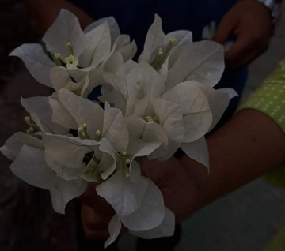

a small corner of the internet
Some things are written.
Some things are remembered.
And some things are easier
to sing.
02 · things to hear
A few songs, recorded in my voice, and left here for you.
Basically my life without you
This song describes how I would wanna treat you, far from the maddening crowd- Us! and only Us!.
Basically me, drenched and drowned, in your love
This song describes how I would still wanna love you despite having flaws in both of us, and it is a promise of never letting you go.
Basically me plucking all the good flowers for you
This song shows my desire to find the best for you-flowers, gifts, time and efforts.
Basically me trying to hold your hands as tightly as possible- reminding myself- you're the one!
This song showers light on my will to see you every morning when I open my eyes, hold your hands close to my heart.
Basically me trying to express how melancholic I feel without your presence
This song shows how my heart feels when we do not have any conversation for a prolonged period of time- hours, days, seconds. I miss you a lot at times and hence seek your presence beside me.
03 · little things

A sentence that belongs to us.
Another photograph.
04 · until next time
Except it isn't.
You can come back whenever you want.